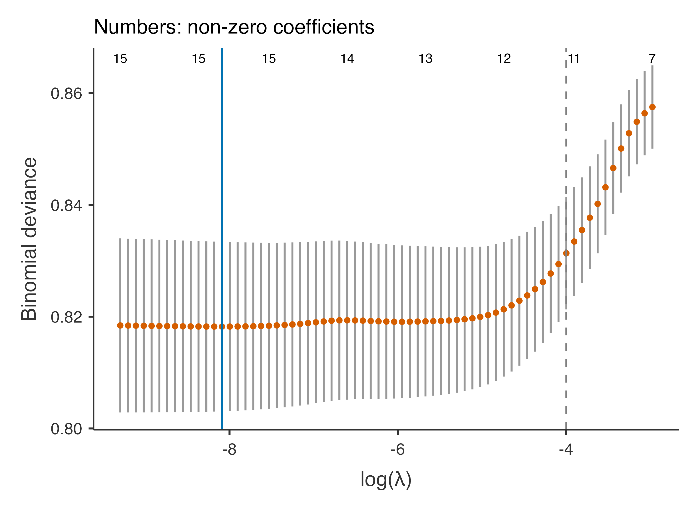

Baseline covariates kept in the model, backward selection and the elastic net repeated in every bootstrap fit, an age × sex interaction, inference after selection, and the value added over a baseline model.
Question. The logistic model gave age, the strongest cardiovascular risk factor, an adjusted odds ratio near 1. Is the effect of age different in men and women? Which of the other predictors are worth keeping? And what do the modifiable risk factors add to a model with only age, sex and the recruiting centre?
Step 1: the panel
On top of the settings of the logistic example:
Panel
Setting
Factors
add centre
Variable Selection
Baseline (always in): tick age, sex, centre; Selection of the other predictors: Backward elimination, AIC; Bootstrap inclusion and coefficients
Interactions
Interaction terms: age × sex, sbp × diabetes; Interactions to keep: Forward selection, LR test
Validation
Bootstrap, 100 samples
Incremental value
Incremental value over the baseline model; net benefit thresholds 0.1, 0.2
Plots
ROC curve
Baseline covariates are always in the model and never selected: here the variables that define who the patient is (age, sex) and the design (centre, an institution effect that should be adjusted for but is not of interest). The other predictors are candidates for backward elimination by AIC. Two interactions are candidates: one that the literature suggests (age × sex) and one we made up (sbp × diabetes).
Note. χ², ΔAIC and ΔBIC: the term added alone to the main-effects model (negative Δ: the term improves the criterion).
Note. Forward selection: at each step the term with the smallest likelihood ratio p enters, while p < 0.05.
Note. The selection is repeated in every resampled fit, so the internal validation includes its optimism; the last column is the share of fits that selected the term.
Each candidate is first screened alone against the main-effects model: age × sex improves the fit clearly (likelihood ratio χ² = 21.9 on 3 df — the spline of age has three terms, so the interaction too), the invented sbp × diabetes does not (p = 0.578). Forward selection keeps age × sex. The last column is the share of the bootstrap fits that selected each term: 100% for age × sex, 6% for the invented one — a false positive in one fit in ten, as expected from testing at 5% in every resample.
Effects Within Subgroups
95% CI
Effect
Within
OR
Lower
Upper
p
age: Q3 vs Q1 (66 vs 53)
sex = female
2.027
1.205
3.409
.008
sex = male
0.659
0.437
0.995
.047
sex: male
age = 53 (Q1)
3.205
2.027
5.068
< .001
age = 60 (median)
1.787
1.282
2.490
< .001
age = 66 (Q3)
1.042
0.702
1.548
.837
Note. Odds ratio of each variable of an interaction at the levels (factor) or quartiles (covariate) of the other; other predictors at their reference level or median.
Note. The model was selected in these data: its confidence intervals and p values do not account for the selection, so they are too narrow (see the bootstrap coefficients).
The effects within subgroups explain the puzzle of the logistic example. At 53 years, men have 3.20 times the odds of women; at 66 years the excess has vanished (1.04). In women risk rises steeply with age, in men much less. A single “adjusted odds ratio for age” averaged two opposite things.
Step 3: the selection
Predictor Selection
vs final model
Predictor
Status
Step
χ²
df
p
Bootstrap fits
sbp
kept
20.66
1
< .001
100.0 %
chol
kept
16.90
1
< .001
99.0 %
bmi
kept
2.12
1
.145
51.0 %
smoking
kept
29.84
2
< .001
100.0 %
diabetes
kept
15.61
1
< .001
100.0 %
Note. Baseline covariates, always in the model and not selected: age, sex, centre.
Note. Backward elimination (AIC): at each step the predictor whose removal improves the criterion most leaves. Baseline covariates are never removed.
Note. χ², df, p: each predictor dropped from (if kept) or added to (if not) the final main-effects model; a factor or a spline is one term.
Note. The selection is repeated in every resampled fit, so the internal validation includes its optimism; the last column is the share of fits that kept the predictor.
Backward elimination by AIC keeps every candidate. Body mass index is borderline: its χ² is just above 2 (the AIC threshold for one parameter), and it was kept in only 51% of the bootstrap fits — a coin toss. The selection is repeated in every bootstrap fit, so the optimism-corrected performance includes the instability of these decisions.
Step 4: inference after selection
The confidence intervals of a model selected in the same data ignore the selection: they are too narrow and the estimates of predictors that “survived” are biased away from zero. The bootstrap coefficient table(Heinze et al. 2018) shows the honest variability of the whole procedure.
Bootstrap Coefficients (Selection Repeated)
Bootstrap
Coefficient
Estimate
Median
2.5%
97.5%
Inclusion
RMSD ratio
Rel. cond. bias
Intercept
-7.65113
-7.5940
-11.3779
-3.8248
100.0 %
0.861
-0.00930
sbp
0.18152
0.1880
0.1217
0.2652
100.0 %
1.030
0.04199
chol
0.24364
0.2453
0.1271
0.3282
99.0 %
0.984
-0.00616
bmi
0.01944
0.0186
0.0000
0.0460
51.0 %
1.271
0.56569
age
0.01476
0.0115
-0.0643
0.0938
100.0 %
0.876
-0.06434
age'
0.07976
0.0932
-0.1359
0.2854
100.0 %
0.883
0.01853
age''
-0.23213
-0.2554
-0.9593
0.5025
100.0 %
0.894
0.00027
sex: male
1.70071
1.2000
-3.0756
6.3392
100.0 %
0.886
-0.04266
smoking: former
0.12118
0.1108
-0.1015
0.3738
100.0 %
0.851
-0.04765
smoking: current
0.80221
0.8038
0.5271
1.0334
100.0 %
0.967
-0.00901
diabetes: yes
0.78439
0.7585
0.4264
4.0470
100.0 %
4.460
0.24956
centre: B
-0.14549
-0.1623
-0.4008
0.1282
100.0 %
1.027
-0.00530
centre: C
-0.08326
-0.1089
-0.3461
0.2358
100.0 %
1.011
0.13606
age × sex: male
-0.00778
0.0006
-0.0994
0.0854
100.0 %
0.884
-0.24871
age' × sex: male
-0.18520
-0.2129
-0.4477
0.0667
100.0 %
0.903
0.07465
age'' × sex: male
0.72963
0.7983
-0.2212
1.6991
100.0 %
0.924
0.07389
sbp × diabetes: yes
0.00000
0.0000
-0.2619
0.0000
6.0 %
Note. 100 bootstrap fits, each repeating the whole procedure. Median and 2.5th-97.5th percentiles count a coefficient left out of a fit as 0; inclusion: share of fits with the coefficient not 0. RMSD ratio: root mean squared difference of the bootstrap estimates from the final one, over its model-based SE (above 1: the selection adds variability the SE ignores). Relative conditional bias: mean estimate where selected over the final estimate, minus 1 (Heinze, Wallisch & Dunkler 2018).
Note. Percentile intervals describe the variability of the whole procedure; they are not exact confidence intervals, least of all for coefficients often shrunk or selected to 0.
How to read it:
Inclusion: the share of fits with the coefficient not 0. Strong predictors are always in; bmi is in half of them.
Median and percentiles count the fits that dropped a term as 0, so a term often dropped has an interval that touches 0.
RMSD ratio compares the bootstrap spread with the model-based standard error: above 1 the selection adds variability that the usual SE ignores. The very large value for diabetes (4.5) comes from the fits that selected the invented sbp × diabetes interaction: in those, the diabetes coefficient means “the effect of diabetes at a systolic pressure of 0” and takes absurd values. Main effects in models with interactions are unstable; report effects within subgroups instead.
Relative conditional bias: how much larger the coefficient is in the fits that selected it. Positive values mean that selection inflates effects.
Most Frequent Selected Models (Bootstrap)
Terms selected
Fits
%
Cumulative
age, centre, chol, diabetes, sbp, sex, smoking, age:sex
48
48.0 %
48.0 %
age, bmi, centre, chol, diabetes, sbp, sex, smoking, age:sex
45
45.0 %
93.0 %
age, bmi, centre, chol, diabetes, sbp, sex, smoking, age:sex, sbp:diabetes
5
5.0 %
98.0 %
age, bmi, centre, diabetes, sbp, sex, smoking, age:sex
1
1.0 %
99.0 %
age, centre, chol, diabetes, sbp, sex, smoking, age:sex, sbp:diabetes
1
1.0 %
100.0 %
Note. The 5 most frequent sets of selected terms among the bootstrap fits (5 distinct sets).
Only 48% of the bootstrap fits chose the final model; the two most frequent models together make 93%. The model is reasonably stable, which is what one expects with 358 events for a handful of candidates.
Step 5: the elastic net instead
Stepwise selection is the most criticised step in prediction modelling. The elastic net(Zou and Hastie 2005) estimates all candidates at once with a penalty that shrinks coefficients towards 0 (and sets some exactly to 0), with the penalty λ chosen by cross-validation. Baseline covariates are not penalised. In the panel: Selection of the other predictors: Elastic net, mixing α = 0.5.
Note. Not shown for a penalised model: standard errors, CIs and p values, likelihood ratio tests, the Shapley decomposition and the heuristic shrinkage factor (a relaxed lasso has them).
Note. Baseline covariates, always in the model and not selected: age, sex, centre.
Note. Elastic net, mixing α = 0.5, λ = 0.0003068 (minimum deviance, 10-fold cross-validation); baseline covariates are not penalised. A predictor is kept when any of its coefficients is not shrunk to 0; all candidate interactions enter the penalised model.
Note. Resampled fits use the λ of the final model (the tuning itself is not validated); the last column is the share of fits that kept the predictor.

The cross-validated deviance is flat over a wide range of λ and its minimum (solid line) lies at a very small λ: with 2292 patients and a dozen parameters there is little overfitting to penalise, and the elastic net keeps everything with almost no shrinkage. The largest λ within 1 SE rule (dashed line) would choose a sparser model, at the price of more shrinkage than the data need. That agrees with the shrinkage factor of the logistic example (above 0.9). Penalisation matters when the events per parameter are few; here the data were large enough. Repeat the λ tuning in each resampled fit validates the tuning too, at the cost of time.
Step 6: incremental value
Do the modifiable risk factors (blood pressure, cholesterol, bmi, smoking, diabetes) improve on a model with only the baseline covariates (age, sex, centre)? The incremental value table compares the baseline model with the full prediction model on the same patients (Pencina et al. 2008; Steyerberg 2019).
Incremental Value over the Baseline Model
Δ 95% CI
Optimism-corrected
Data set
Measure
Baseline
Full
Δ
Lower
Upper
p
Baseline
Full
Δ
Development
C-statistic (AUC)
0.60429
0.6890
0.08475
0.0540
0.1155
< .001
0.5935
0.6733
0.07980
Discrimination slope
0.01705
0.0692
0.05219
0.0147
0.0622
0.04749
Calibration slope
1.00000
1.0000
0.00000
0.9204
0.9135
-0.00693
Brier score
0.12971
0.1227
-0.00702
0.1305
0.1247
-0.00580
Scaled Brier score
0.01587
0.0691
0.05327
0.0108
0.0548
0.04403
Nagelkerke R²
0.02926
0.1081
0.07884
0.0210
0.0879
0.06685
NRI (continuous)
0.51053
0.4008
0.6202
< .001
IDI
0.05219
0.0407
0.0637
< .001
NRI (risk categories cut at 0.1, 0.2)
0.33936
0.2577
0.4210
< .001
Net benefit at 0.1
0.06506
0.0734
0.00834
Net benefit at 0.2
0.00556
0.0267
0.02116
LR test of the added predictors (χ², df = 9)
109.09947
< .001
Note. The test ignores that the added predictors were selected: its p is too small.
Note. Optimism-corrected: each model validated on the same resamples; the full model's validation repeats its selection.
Note. Baseline model: age, sex, centre. Full model: the prediction model. Δ = full − baseline (for Brier, RMSE and MAE, negative is better).
Note. NRI and IDI are reported for completeness; they can favour miscalibrated models (Pepe et al. 2015) and say less than ΔAUC, the LR test and Δ net benefit.
The AUC rises from 0.604 to 0.689 (Δ = 0.085, 95% CI 0.054–0.115, paired DeLong). The optimism-corrected columns validate both models on the same bootstrap samples (repeating the selection for the full model): the gain survives, Δ = 0.080. The likelihood ratio test of the added predictors is highly significant, though its p ignores that the predictors were selected. Net benefit increases at both thresholds. NRI and IDI are reported because readers ask for them, but they can favour miscalibrated models; ΔAUC, the likelihood ratio test and Δ net benefit say more.
Heinze, Georg, Christine Wallisch, and Daniela Dunkler. 2018. “Variable Selection – a Review and Recommendations for the Practicing Statistician.”Biometrical Journal 60 (3): 431–49. https://doi.org/10.1002/bimj.201700067.
Pencina, Michael J., Ralph B. D’ Agostino, Ralph B. D’ Agostino, and Ramachandran S. Vasan. 2008. “Evaluating the Added Predictive Ability of a New Marker: From Area Under the ROC Curve to Reclassification and Beyond.”Statistics in Medicine 27 (2): 157–72. https://doi.org/10.1002/sim.2929.
Steyerberg, Ewout W. 2019. Clinical Prediction Models: A Practical Approach to Development, Validation, and Updating. In Statistics for Biology and Health. Springer International Publishing. https://doi.org/10.1007/978-3-030-16399-0.
Zou, Hui, and Trevor Hastie. 2005. “Regularization and Variable Selection via the Elastic Net.”Journal of the Royal Statistical Society Series B: Statistical Methodology 67 (2): 301–20. https://doi.org/10.1111/j.1467-9868.2005.00503.x.